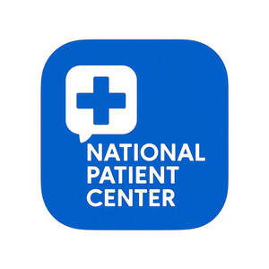
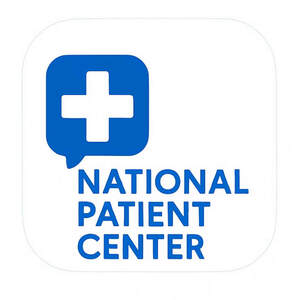

Trade Mark Journal No.2025/045 7 November 2025
UK00004251085 18 August 2025 (5,9,10,16,35,38,42,44)
Mark 1

Mark 2

- Class 5
- Pharmaceutical preparations and medical supplies linked with patient care and prescription reminders.
- Class 9
- Downloadable computer software; mobile applications for appointment booking, patient management, healthcare scheduling, medical information, and reminders; downloadable electronic publications in the field of healthcare and patient services.
- Class 10
- Medical apparatus integrated with digital applications for patient monitoring and care.
- Class 16
- Printed publications, leaflets, brochures, manuals and informational materials relating to healthcare, patient education, and appointment management.
- Class 35
- Business administration services for healthcare practices; appointment scheduling services; practice management services; patient record administration; business consultancy relating to healthcare IT.
- Class 38
- Transmission of reminders by electronic mail, SMS, instant messaging and mobile push notifications; providing access to online communication portals for patients and healthcare providers; electronic messaging services for healthcare practices.
- Class 42
- Software as a Service (SaaS) for patient appointment scheduling, reminders, confirmations, and cancellations; platform interoperability services between healthcare IT systems; cloud-based software for healthcare providers; design and development of healthcare applications; data integration services for electronic health records.
- Class 44
- Medical information services provided via a mobile application; healthcare support services; telemedicine services; providing medical and healthcare information to patients and healthcare professionals; consultancy relating to patient care and healthcare management.
Global Luxury Group EOOD
Representative: Gizem Ayaydin